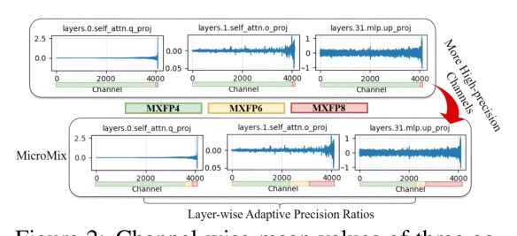
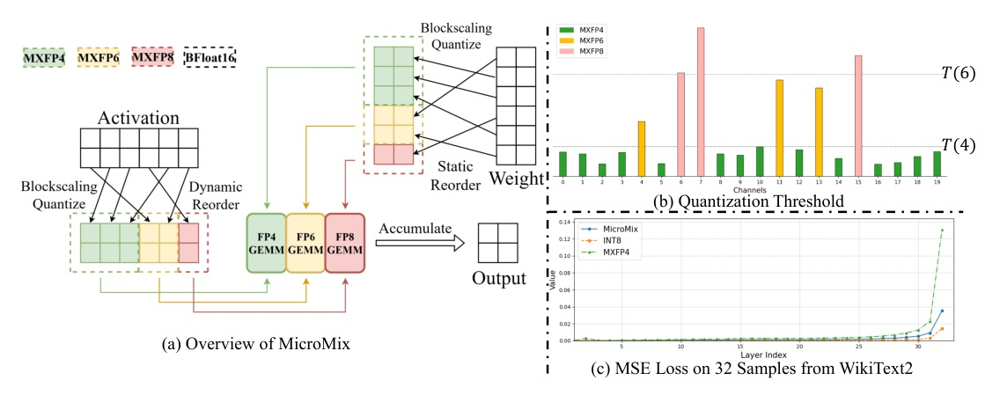
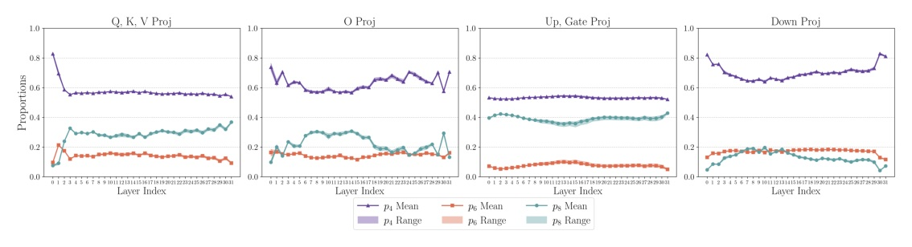
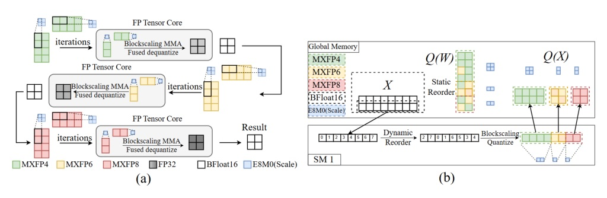
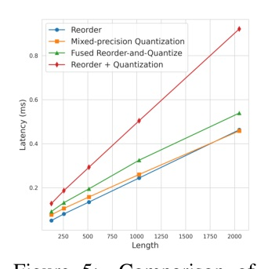
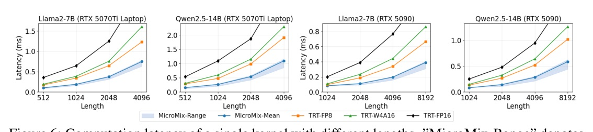
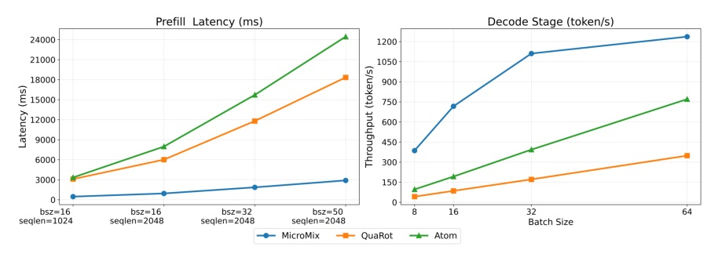
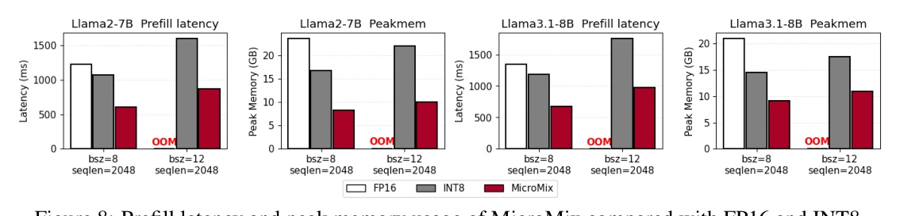

ICLR 2026 paper: threshold-driven MXFP4/6/8 quantization plus Blackwell-aware GEMM kernels for near-FP16 accuracy and real inference speedups.
Source artifacts: arXiv 2508.02343v2 · OpenReview P5OKoZdwlB · local PDF/raw/spec verified.
MicroMix treats bit allocation and kernel format as one problem: decide which channels deserve MXFP8, then execute the remaining majority on MXFP4/6 Tensor Cores.





| Setting | FP16 | MicroMix | Best non-FP16 | Source |
|---|---|---|---|---|
| Llama3.1-8B avg 0-shot | 73.03 | 71.56 @ 5.51b | 70.97 FlatQuant | Table 1 p.7 |
| Llama3.1-8B MMLU | 65.24 | 62.65 @ 5.51b | 61.33 FlatQuant | Table 1 p.7 |
| Qwen2.5-32B avg 0-shot | 75.55 | 75.20 @ 5.22b | 74.72 FlatQuant | Table 1 p.7 |
| Qwen2.5-32B MMLU | 83.32 | 81.79 @ 5.22b | 81.52 FlatQuant | Table 1 p.7 |
| Benchmark | FP16 | MicroMix | Interpretation |
|---|---|---|---|
| Mixtral-8x7B avg / time | 78.58 / 5m18s | 78.20 / 2m03s | 0.38 pt avg drop, much lower runtime |
| Qwen2.5-Math-7B avg | 87.2 | 83.8 @ 5.16b | <4% avg drop; GSM8K/MATH/CMATH retain >=98.4% |
| Qwen2.5-Coder-32B HumanEval+ | 84.1 | 85.4 | Matches INT8 and exceeds FP16 in this metric |
| Qwen2.5-Coder-32B MBPP+ | 70.9 | 74.1 | Above FP16 and INT8 reported values |
The result works because MicroMix does promotion only where the error budget demands it, then makes that irregular decision look regular to the GPU.
| Check | Range / finding | Why it matters |
|---|---|---|
| MXFP6/8 exponent-mantissa variants | Winogrande 71.51-72.69; PPL 6.72-6.84 | Threshold definition absorbs much of the format sensitivity |
| Calibration dataset | Qwen2.5-14B metrics fluctuate about 1% | Offline partition is not tied to one tiny calibration set |
| Fused op runtime share | 7.9%-17.0% across length 128-4096 | Reorder overhead stays below 20% of kernel time |
| Average-bit operating point | 4.48-6.01 bits -> avg 74.85-75.20 | 5.22b chosen near best accuracy/time point |

| M | W4A4 speedup | W6A6 speedup | W8A8 speedup |
|---|---|---|---|
| 1 | 2.62x | 3.14x | 1.60x |
| 8 | 3.23x | 3.58x | 1.93x |
| 32 | 4.02x | 5.00x | 3.12x |
| 128 | 1.99x | 1.92x | 1.19x |


To bridge this gap, we propose MicroMix, a co-designed mixed-precision quantization algorithm and GEMM kernel based on Microscaling (MX) data formats.
MicroMix 的重點是同時設計量化演算法與 GEMM kernel；它不是只把 bit-width 降到 5 bits 左右。Abstract p.1
MicroMix is the only quantization method that consistently preserves at least 98% of FP16 average accuracy on both models (Llama: 71.56 vs. 73.03; Qwen: 75.20 vs. 75.55).
主結果守住兩個主模型的 FP16 平均 0-shot accuracy 98% 以上，這是 Table 1 的品質門檻。§4.2 p.7
Fused reorder-and-quantize operation takes less than 20% MicroMix kernel runtime across different lengths.
Adaptive precision 最怕 reorder 成本；Table 6 顯示 fused reorder-and-quantize 沒有吃掉主要 GEMM 收益。§4.3 / Table 6 p.9
On the RTX 5070Ti laptop, it achieves a 2.45 to 2.93x speedup over TRT FP16 and up to 1.45x over TRT FP8. On the RTX 5090, MicroMix delivers a 2.29 to 3.38x speedup over TRT FP16 and up to 1.74x over TRT FP8.
效率證據橫跨 laptop 與 desktop Blackwell GPU；這就是 MXFP co-design 的主戰場。§4.4 / Fig.6 p.9
MicroMix is a good compression paper because its accuracy story, bit-allocation rule, and kernel path are mutually constrained.